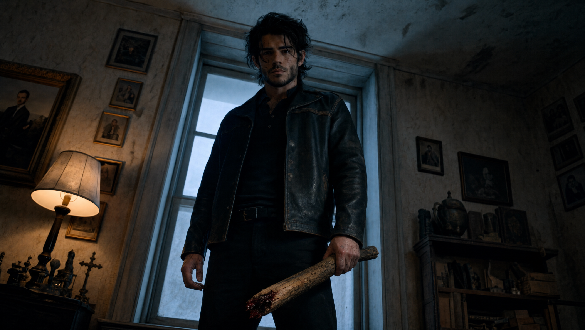
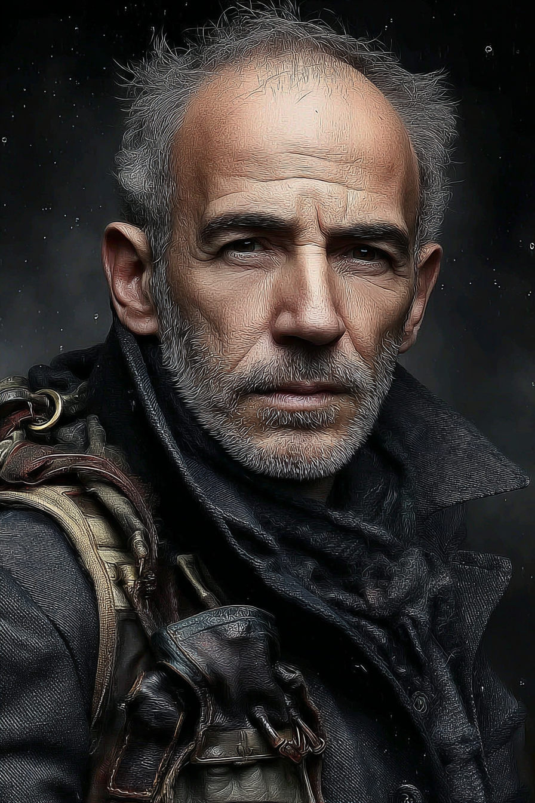

Open the Cage
An original AI music video telling part of Ethan’s backstory from Predator/Prey. This one started with a song.
Updated July 2026
Most of my AI film work starts with visuals. Characters, environments, a scene I want to build. This time I wrote the music first using Suno, then built everything around it. That one decision changed the entire production workflow and created problems I hadn’t anticipated.
Open the Cage is a standalone music video telling part of Ethan’s backstory from Predator/Prey. Ethan has spent years suppressing who he was in those first years after turning. Ruthless, remorseless, a predator with no restraint. That side of him appears in the video as Old Ethan, the version of himself he’s worked hard to keep locked away. Ellie was the reason he learned to hold it back. When she’s murdered by a religious anti-vampire group who couldn’t accept her willingly caring for him, everything he spent years holding back comes loose. Vengeance comes fast and total. Peace doesn’t come at all.
Open the Cage. A standalone music video from the Predator/Prey series.
The cast

Ethan
Male Lead
The MMC of Predator/Prey. Vampire, controlled, contained. Spent years building a version of himself that could exist alongside humans without destroying them.
Old Ethan
The Shadow
The version of Ethan that predates Ellie. No restraint, no remorse. What he looks like when the cage opens.
Ellie
The Catalyst
The human woman whose death drives everything. Warm, bookish, completely unafraid of what Ethan is.

Cult Leader
The Antagonist
Leader of the anti-vampire group responsible for Ellie’s murder. Believes entirely in what he does.
Building the environments
Three distinct locations, three different tones. The warmth of Ellie’s space, the cold of the interrogation room, the obsessive detail of the cult leader’s lodge. Getting that contrast to read across the edit was as important as the character work.
Ellie’s house. Warm, cluttered, lived-in. The contrast to everything that comes after.
Cold concrete, single bulb. Where the cult held people they considered threats.
The cork board of targets, crosses and stakes laid out like tools. The world these people built to justify what they do.
When the song doesn’t care about your shot list
Music-first is a fundamentally different way of working. When the song already exists and can’t change, the edit has to serve it. That’s a harder constraint than it sounds when you’re also telling a story across multiple environments and characters.
The most significant change I made mid-production was the timing of Ethan’s strike on the cult leader. Originally that scene was planned later in the video. When I started editing to the track, landing that hit at the song’s climax was far more powerful. So I pulled it forward, then extended the scene that followed to let the aftermath breathe. That kind of restructuring happened more than once. The song doesn’t care about your shot list. You work around it or the edit feels wrong.
Four things I would tell myself at the start
01
Music-first means story flexibility is non-negotiable
If the song has a specific emotional peak, your most impactful visual moment has to land there, regardless of where you planned to put it in the narrative. Be prepared to reorder.
02
Write the song with the edit in mind
Map out the song’s structure before you generate a single shot. Verse, chorus, bridge, climax. Each section needs a visual intention before you start.
03
Extending scenes is easier than cutting them short
When restructuring to match the music, holding on a shot longer is easier than generating additional content to fill a gap. Build in breathing room.
04
Two versions of one character need separate reference sheets
Ethan and Old Ethan required distinct anchors in Kling. Without that separation the generations blurred between the two and you lost the visual contrast that makes the story work.
What I used and what each one did
Suno
Original song composition. The track was written and generated here first, before any visual work began. The entire production was built around the output.
Midjourney
Character and environment assets. All still images: Ethan, Old Ethan, Ellie, the Cult Leader, and all three location references.
Nano Banana Pro
Used to alter or embed additional assets into some of the Midjourney generated scenes and to create start frame shots for some of the scenes.
Claude
Character development and prompt refinement. Used to build out the character descriptions and iterate on prompt language before generating in Midjourney and Kling.
Kling
Video generation. All motion: character scenes, environment shots, the confrontation sequence and the aftermath. Separate @character anchors used for Ethan and Old Ethan.
DaVinci Resolve
Editing, sound design and colour grade. Where the music and visuals were brought together. The restructuring of the climax scene happened here.